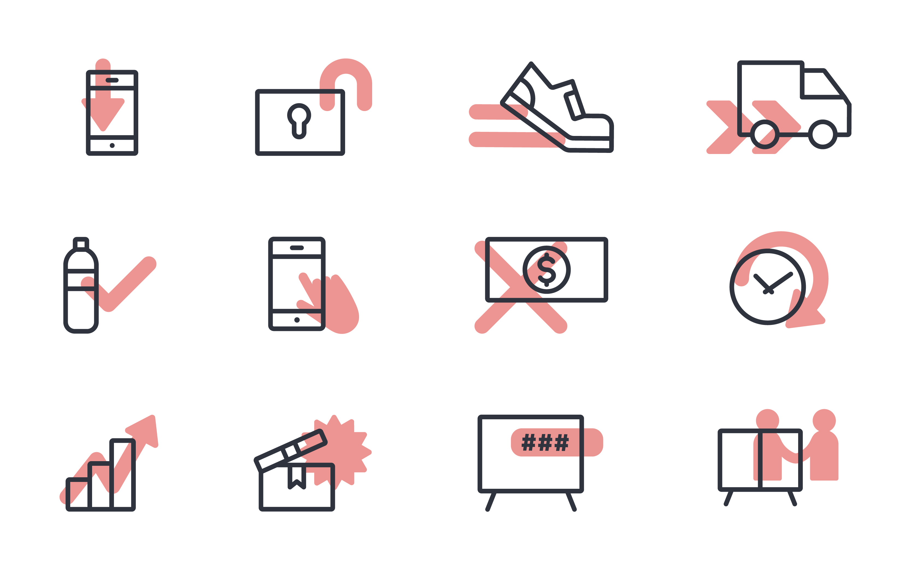
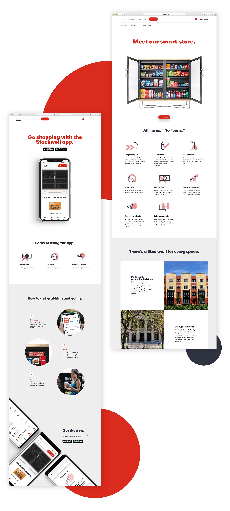
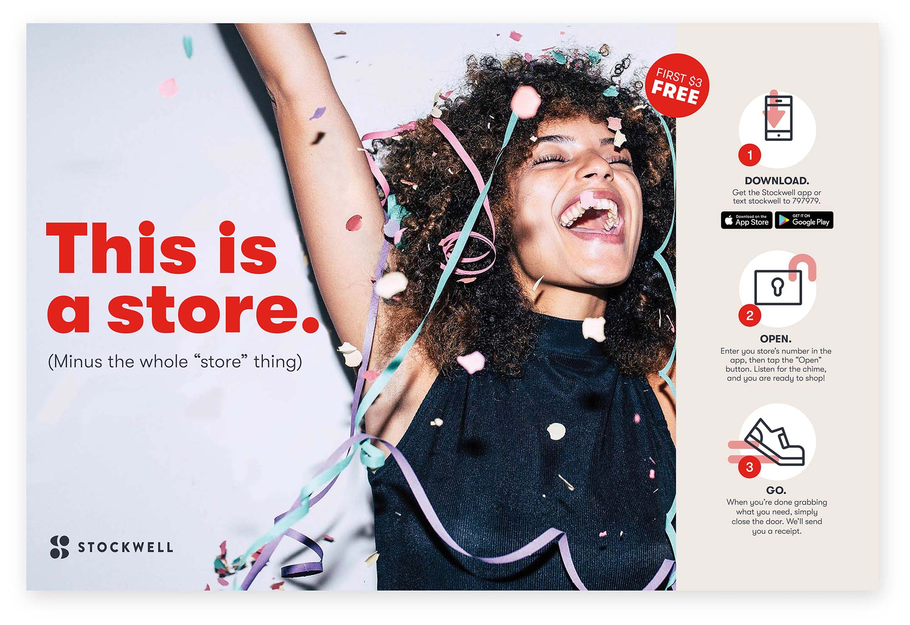
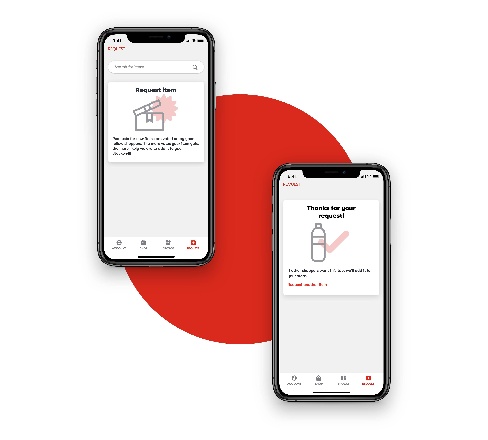

Stockwell's Iconography
During my 2019 summer internship, I modified and developed an extensive system around icons to better communicate ideas. The cherry overprints represent action while the outline part of the icons represented the object. The icons and it's overprints reflected stockwell's goal to make the user’s experience seamless and effortless.
Type: Visual Design
Date: Summer 2019
Role: Product Desigener
Tools: Illustrator

Icon application: Stockwell's website
After finishing the icons, I handed the icons to the design and engineering team which they applied to Stockwell’s website, marketing collaterals, and mobile app.

Icon application: Table topper
The design team applied the icons to Stockwell's rebranded materials including table toppers for the Stockwell stores.

Icon application: Mobile app
The engineering team applied the icons into the Stockwell app pages.
